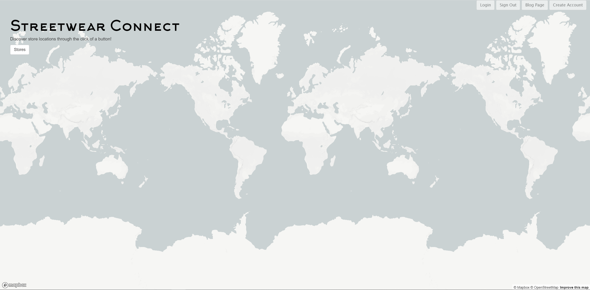

.about me
Hi! I'm Nikkos. I'm currently a junior undergraduate studying computer science at the University At Buffalo. I had been interested in computers from a young age, and I'd like to shout out All Star Code for pushing me in the direction that allowed me to love programming as much as I do today. I am currently building personal projects and looking for internships and opportunities to diversify and expand my experience in the field.
.portfolio
streetwearConnect
streetwearConnect was my first full-scale project that I had personally designed and built with a team. Used to locate popular "streetwear" brands, I use an API to navigate through an overworld map through the use of buttons. Pitched to investors as well as family and friends.